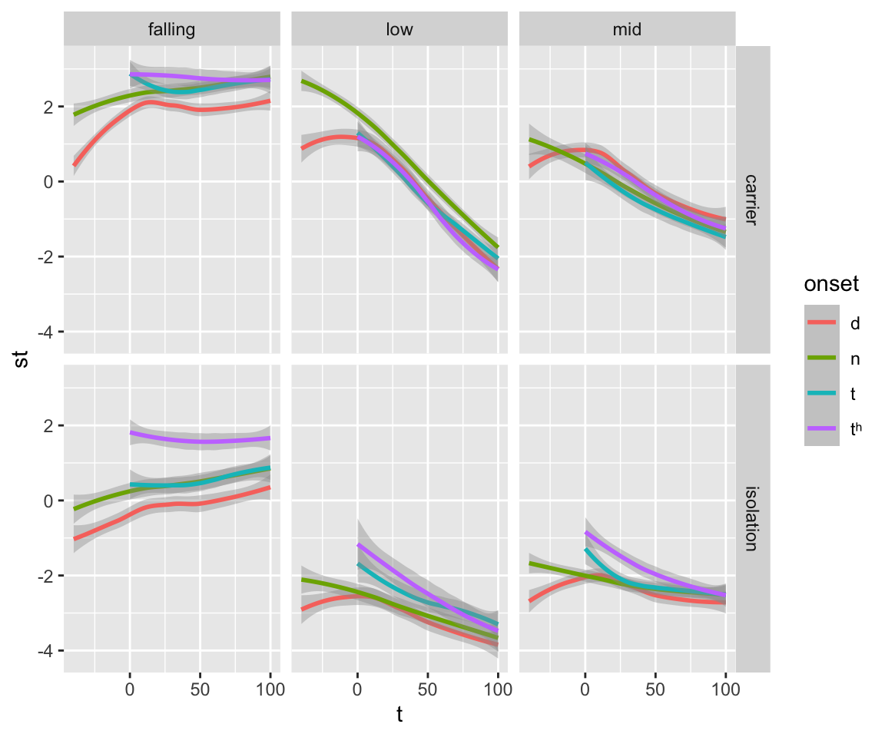
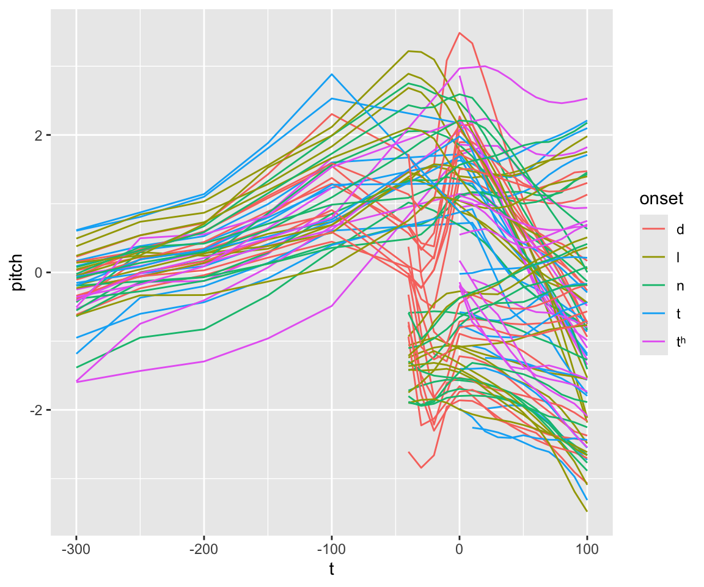
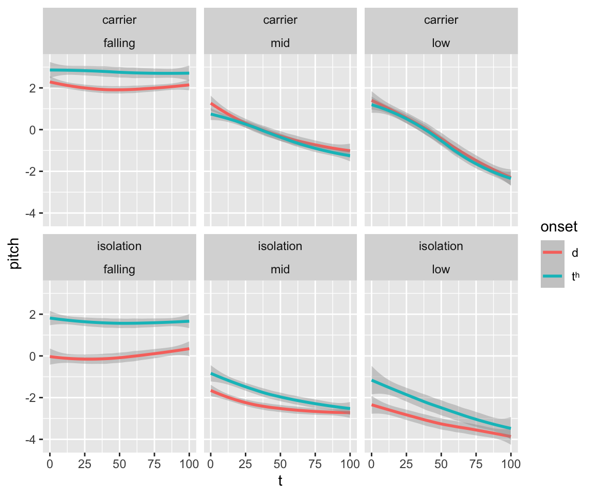

library(tidyverse)
library(mgcv)
library(itsadug)
library(ggeffects)15 Homework 3
15.1 Preliminaries
Load libraries we will need:
15.2 Context
15.2.1 Dataset
This homework uses data from Kirby (2018): abstract here. I processed the raw data from the supplementary materials for the paper to produce the file kirby_if0_spc.csv, which contains spectral measures data reported in Kirby (2018).
Load this data:
spc <- read.csv("../../data/kirby_if0_spc.csv", stringsAsFactors = TRUE)15.2.2 Context: general
Here is context about this data, corresponding to different columns of the dataframe. You can skip to “Context: this assignment” if you wish, and just come back to this section if you need more detail about the data.
- Each
subjectread each item (item), for their native language, three times (repetition) - Each item is a syllable CV
- beginning in consonant
onset, valuesdlnttʰ - V =
vowel tone= tone for the tone languages (language= Thai, Vietnamese); for the non-tone language Khmer, this is the same asvowel
- beginning in consonant
context: words read either in isolation or in a carrier sentencet: time, in msec, relative to the onset of the vowelf0: F0, in Hzst: F0, transformed to semitones- Speaker normalization: divide by speaker’s mean F0
- Transform to auditory scale: log-base-2-transform and multiply (that value) by 12.
The general question of interest for this data is the relationship between onset and F0, across three languages.
Of primary interest is differences between onset =
- tʰ, t, d: expected to decrease in F0/st (e.g., t > d), called intrinsic F0 effects.
- n: included as a sonorant, against which other F0 perturbations from the C (for obstruents) can be measured.
It is of interest not just whether F0/st differs by onset, but how the trajectory differs as a function of t (time).
Here are some plots of F0 over time (in semitones) as a function of onset, in a similar format to Kirby (2018), from just the Thai data:
## filtering out timepoints which can't be part of the stop, for clarity
filter(spc, language == "Thai" & onset %in% c("d", "t", "tʰ", "n") & t > (-50)) %>% ggplot(aes(x = t, y = st)) +
geom_smooth(aes(color = onset)) +
facet_grid(context ~ tone)
Pitch is greatly influenced by tone, as we’d expect. It looks like there are differences in F0 trajectory between different onsets, which may be modulated by tone and context.
15.2.3 Context: this assignment
The dependent variable is st, which is a speaker-normalized version of f0 (in Hz), transformed to an auditory scale (semitones). To make this data more intuitive, let’s rename and define some variables::
st\(\to\)pitchtrajectory: a single pitch trajectory = a unique value ofitem:context:repetition, for a uniquesubject
spc <- spc %>%
mutate(
pitch = st,
trajectory = interaction(item, repetition, context, subject)
) %>%
droplevels()For example, here are all pitch trajectories for subject TF1:
spc %>% filter(subject == 'TF1') %>% ggplot(aes(x = t, y = pitch)) + geom_line(aes(group = trajectory, color = onset))
## Warning: Removed 2 rows containing missing values or values outside the scale range
## (`geom_line()`).
To keep things simple, we will consider just:
onset= d and th- Thai data
t> 0 (meaning: pitch measured during the vowel)
thai_df <- filter(spc, t >= 0 & onset %in% c("d", "tʰ") & language == "Thai") %>% droplevels()Some processing of factors:
thai_df <- thai_df %>% mutate(
## tone: falling, mid, low
tone = fct_relevel(tone, "mid", after = 1)
)Thai is a tone language, and it is of interest whether there is any difference in trajectories for each onset. It is possible that tone languages do not show intrinsic F0 effects, or that any effect is variable across contexts and speakers.
Our research questions are:
- Primary
- Do the
pitchtrajectories differ byonset(between d and tʰ)?
- This is largely a question about shape—how large is the
onseteffect at its maximum (t= 0), and how long does any difference persist into the vowel?
- Do the
- Secondary
Is any
onseteffect robust? Namely, how much does it differ bytoneandcontext(isolation vs. carrier phrase)?Does the
onseteffect differ between speakers?
In this homework, you’ll carry out an analysis addressing these research questions.
15.3 Part 1: GAM
You’ll first build and interpret a model without random effects.
This is not a “good” model—for any data with repeated measures (here, by-subject), a valid model needs random effects. However, such a model is often considered as a first step towards a “real” GAMM model. This homework gives practice with this method of “building up” a model for repeated-measures data.
15.3.1 Model structure / Exploratory analysis
To motivate our model structure, we consider (1) domain knowledge, (2) the experimental design, and (3) exploratory plots. We are primarily interested in time trajectories—smooths of t. Each predictor mentioned above—tone, onset, and context–could affect the height or shape of these trajectories. Any such effect could differ by speaker.
We first abstract away from speaker variability to consider “overall” effects of each predictor, motivated by (1) and (2):
tone: expected to affect trajectory height and shape (this is the definition of tone).onset: whether it affects trajectory height and shape are required for RQ1.context: expected from previous work to affect trajectory height and shape (words in isolation have different pitch trajectories).contextandtoneinteractions withonset:this is relevant for RQ2.- From previous work: different
onsettrajectories may be more separated in isolation context, and in high tone words.1 - Addressing RQ2 requires at least accounting for
context:onsetandtone:onsetinteractions w.r.t trajectory height - Unclear: trajectory shape.
- From previous work: different
These observations alone motivate a basic model structure. Let’s also examine (3) empirical plots of the onset effect, by tone and context, as a sanity check:
thai_df %>%
ggplot(aes(x = t, y = pitch)) +
geom_smooth(aes(color = onset)) +
facet_wrap(~ context + tone)
Trajectory height and shape are clearly affected by context and tone, while the overall effect of onset is unclear (good—this is RQ 1), as is possible modulation of onset by context/tone (RQ 2).
15.3.2 A first model
Question 1
- What is the formula for a GAM model motivated by the discussion above? Your model should contain terms capturing all bullet points except the “Unclear” one.
- I recommend coding
onset,context, andtoneso the model contains “difference smoooths”. - Note that you do not need to allow the smooths to vary by the interaction of
context:onsetortone:onset. You do need to allow the height of the smooths to vary by these interactions.
Fit this model, without autocorrelation.
Re-fit the model accounting for within-trajectory autocorrelation. Save the resulting model as
thai_m1.
Print a summary of this model:
summary(thai_m1)15.3.3 Interpretation
Because this model doesn’t include random effects, we shouldn’t perform actual model comparisons / examine its \(p\)-values. Let’s instead interpret its results visually:
Assuming your model contains a term called onset_ord—this code produces a plot of this model’s predicted trajectories for each onset value, marginalizing over tone and context:
ggemmeans(thai_m2, terms = c("t", "onset_ord")) %>% plot()Question 2
Make a single plot showing predicted trajectories by
onset, for each (pair of) values oftoneandcontext(like one of the facet plots above). It should also include SEs.2Plot the difference curve, for the difference in predicted trajectories between
dandth, for each pair of values oftoneandcontext.
- Try to get these plots in 6 panels of a single figure, rather than 6 plots printed vertically one after the other.
- What would you conclude about RQs 1-2, just based on these plots, plus the one immediately above (which used
ggemmeans())?
15.4 Part 2: GAMM
Let’s now consider by-speaker variability. This will motivate the random effects to add to model thai_m1 to make a GAMM.
15.4.1 Exploratory analysis
In terms of our model: to address RQs 1 and 3, I claim that we need to minimally include random-effect terms capturing the following:
- Speaker variation in trajectory height
- Speaker variation in trajectory shape
- Speaker variation in differences in trajectory height and shape by
onset
(Note that this may not mean three distinct random-effect terms.)
Question 3
List the random-effect terms that need to be added to model
thai_m1to capture these three types of speaker variation.Explain why each is necessary to address RQs 1 and 3.
There are many other types of by-subject variation that could be accounted for in the model, but all are relevant for a secondary RQ (RQ 2) or for no RQ. It is often not computationally feasible for GAMMs to build a “maximal” model with all possible random effects (as for a GLMM). Instead, we make some plots to see if there are any other important sources of by-subject variation.
Question 4
- Make one or more plots visualizing by-subject variation in trajectories, as a function of
onset,context, andtone.
- To think about: should you examine one predictor at a time, or show them all varying on one plot? If the former, what do you do about the other predictors (e.g.
context,tone) when plotting how the effect of another (e.g.onset) differs by subject
The plot(s) should suggest at least inter-speaker differences in:
- Trajectory height and shape
- Differences in trajectory height and shape, by
onset
We’ve already decided that we’re including terms in the model below to account for these.
- Do your plot(s) suggest other large by-subject differences that we could account for? If so, which random-effect terms should be added to the model? If not, justify your answer. (That is, why doesn’t this matter for our research questions?)
15.4.2 Model
Question 5
- Fit GAMM model
thai_m2, which is the same asthai_m1but with the random-effect terms added that were motivated in Questions 3–4.
- Print a summary of this model:
summary(thai_m2)15.4.3 Interpretation
We can interpret the results of this GAMM visually (as in Question 2), and quantitatively.
Question 6
Repeat Question 2, for model
thai_m2. (I encourage you to compare the results to Question 2, but you don’t need to write this up.thai_m2is a superior model.)Carry out a model comparison, or consider relevant row(s) of the model table, that answers RQ 1. Briefly interpret the result (what does it mean, in words?). [1-2 sentences]
Perform a hypothesis test, via model comparison, that addresses RQ3. Use this result, and your plot(s) from Question 4(a), to answer RQ3. [~2-3 sentences]